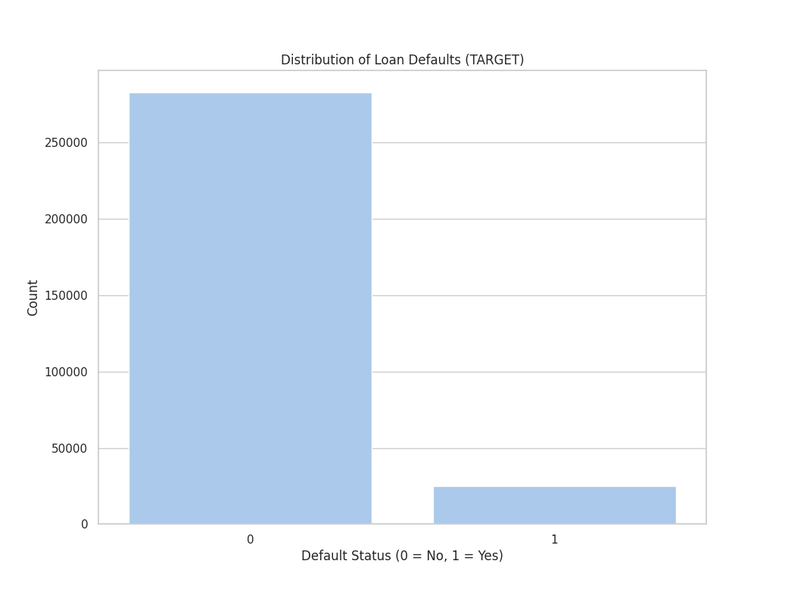
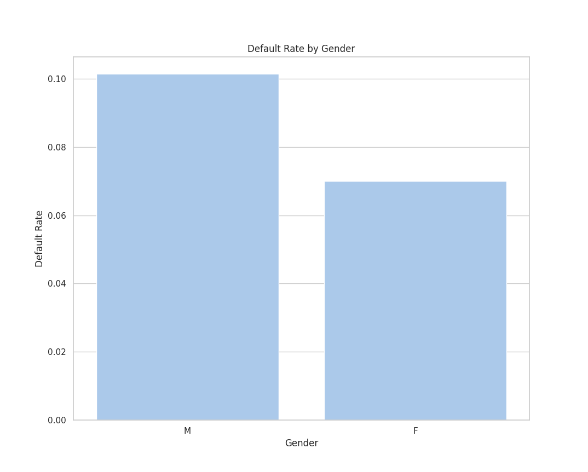
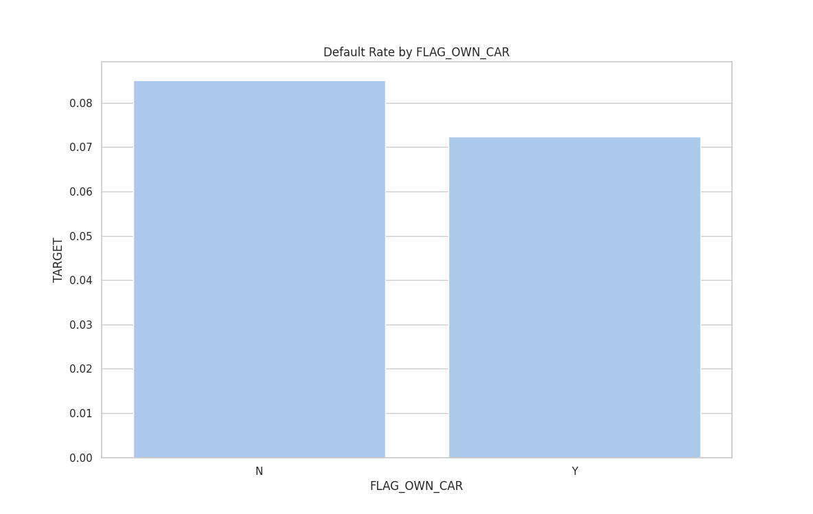
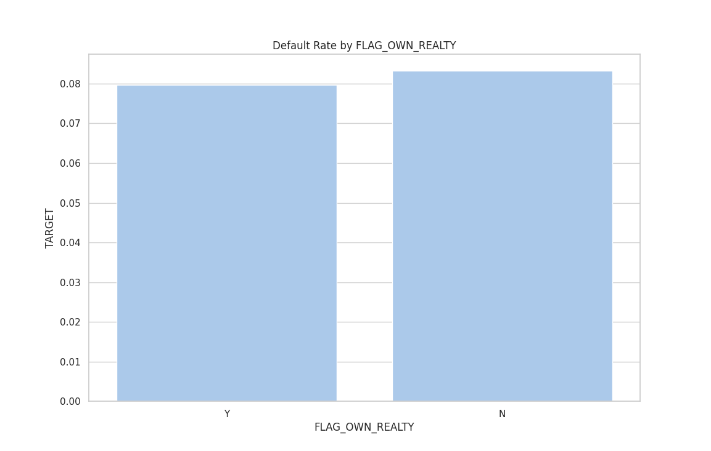
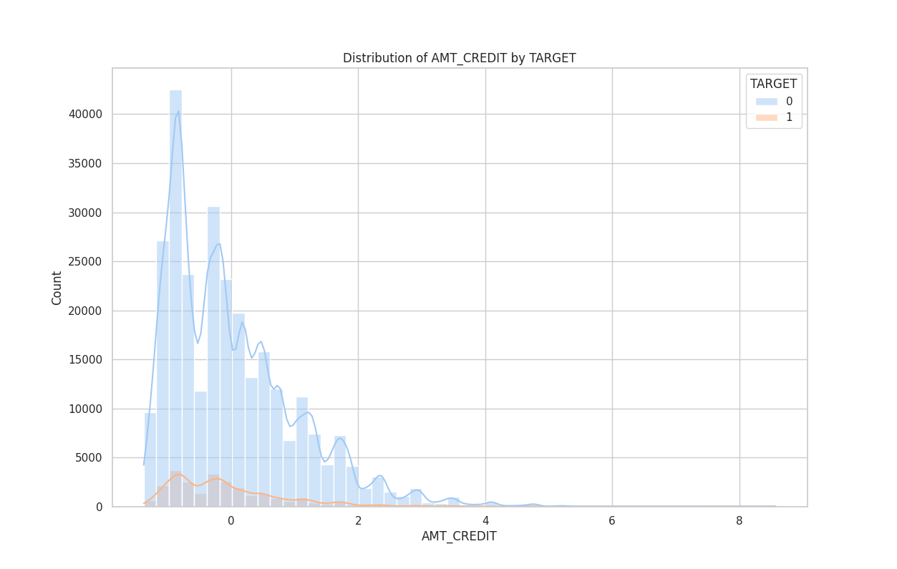
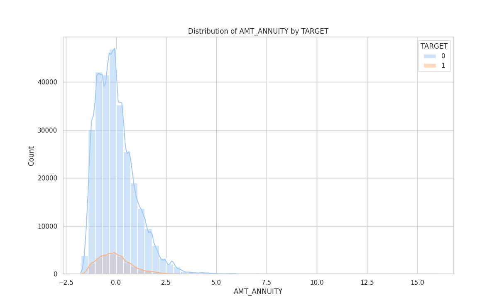
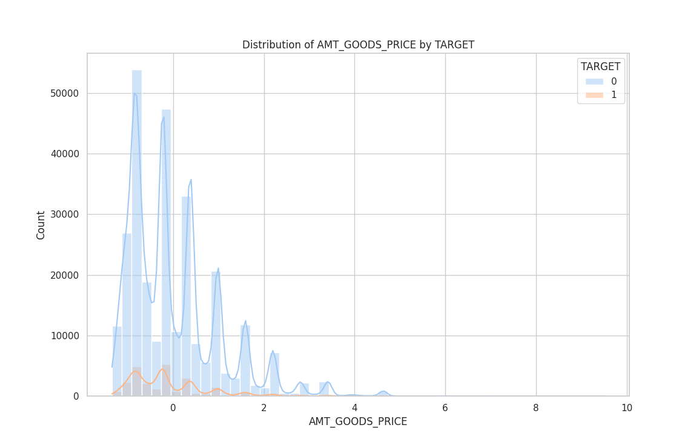
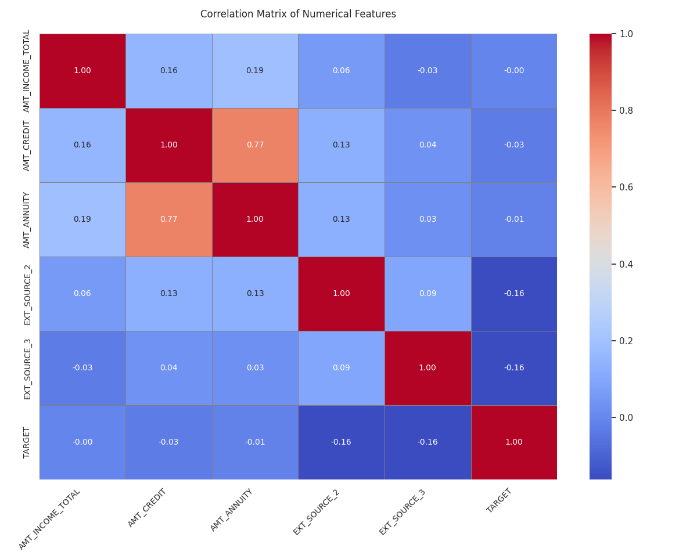

Home Loan Default Prediction Using Machine Learning
This project focuses on predicting the likelihood of a customer defaulting on a home loan using historical demographic and financial data. The dataset contains over 307,000 real-world loan applications, sourced from Kaggle, and includes diverse features such as income, employment history, family status, education, and credit history.
Understanding the Data
- Dataset contains 307,511 rows and 122 columns.
- Target column:
TARGET (0 = repaid loan, 1 = defaulted).
- Challenges:
- Highly imbalanced data (~8% default).
- Many missing values.
- Several categorical variables.
- Initial findings:
- Key features include income, credit amount, employment duration.
- Some columns had over 40% missing values.
- Multiple binary and multi-class string fields (e.g., gender, income type).
Preprocessing the Data for Model Training
- Drop Identifiers: Removed
SK_ID_CURR.
- Missing Values:
- Dropped columns with >40% missing values.
- Numerical: Imputed with median.
- Categorical: Filled with mode.
- Categorical Encoding:
- Binary encoding for gender, car ownership, etc.
- One-hot encoding for multi-class categorical columns like income type, education, organization type.
- Feature Engineering:
- Converted negative day values to positive.
- Created ratios: income per person, credit/income, annuity/income.
- Scaling: Used
StandardScaler for numeric features.
- Final Dataset: 307510 rows, 172 columns (cleaned, numeric only).
📊 Insights from Exploratory Data Analysis (EDA)
- Class Imbalance: Default rate ~8% (Target=1).

- Binary Feature Differences:
- Gender: Males default slightly more.

- Car ownership: Non-owners default more.

- Realty ownership: Non-owners default more.

- Numerical Feature Trends: Credit, annuity, goods price, and children count showed different distributions for defaulters vs non-defaulters.
- Amount Credit

- Annuity

- Goods Price

- Correlation Matrix:
EXT_SOURCE_2 and EXT_SOURCE_3 are negatively correlated with default risk.

🤖 Model Selection
We selected two models suitable for binary classification:
- Logistic Regression:
- Simple, interpretable baseline.
- Good for numeric, large datasets.
- Random Forest Classifier:
- Ensemble of decision trees.
- Captures non-linear patterns, handles imbalance better.
📈 Evaluation & Interpretation
Logistic Regression
| Metric | Class 0 (No Default) | Class 1 (Default) |
|---|
| Precision | 0.92 | 0.44 |
| Recall | 1.00 | 0.01 |
| F1-score | 0.96 | 0.02 |
| Accuracy | 92% |
| ROC AUC | 0.7422 |
Very high accuracy but poor recall on default class due to imbalance.
Confusion Matrix:
[84734 107]
[7330 83]
Random Forest Classifier
| Metric | Class 0 (No Default) | Class 1 (Default) |
|---|
| Precision | 0.96 | 0.17 |
| Recall | 0.72 | 0.62 |
| F1-score | 0.82 | 0.26 |
| Accuracy | 72% |
| ROC AUC | 0.7356 |
Random Forest offers more balanced performance across both classes, better at identifying defaulters.
Confusion Matrix:
[40951 15587]
[1866 3099]